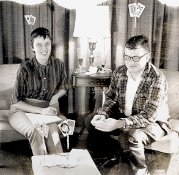

|
Richard Gardner asked me to write a reminiscence of the time when I invented “What’s That on My Head?” I looked through a trunk for some old pictures and the best I could find is this really sappy picture of me taken in 1960. It shows me testing a prototype of the game, then made out of playing cards and coat hangers. That’s Ruth Cobb helping test the game. The original idea for the game came from a series of old logic puzzles that usually involved three people with something or other on their heads that they can’t see. Here’s one example: |
 |
The professor has three students, Alice, Barbara, and Charlotte. He tells them to close their eyes and he says, “I’m going to put a black hat or a white hat on each of you. Don’t open your eyes until I tell you to.” The professor puts a white hat on each of them. “Now open your eyes and raise your hand if you see a white hat on someone. The first person to deduce the color of her own hat gets a medal.” Of course, all three raised their hands. But several minutes passed before Alice said, “I know my hat is white.” So how did Alice know? You can click here for the answer. |
The question cards I designed for “What’s That on My Head?” were similar to the advanced questions that are now in the game. There were no simple questions that let you get started in the game before you attempt the advanced level. And it was even more difficult because you couldn’t just follow a logic system to process the information you received about what is on your head. Any smart person could do that. No, you had to be extra smart and devise your own logic system to process the information. I don’t know what I was thinking back in 1960. It never occurred to me that the original version of the game was too complicated. And even if it had occurred to me, I doubt if I could have figured out how to make it simpler. The game was published in 1963 by Games Research, Inc., a small company in Boston. It only lasted on the market for about a year. But it did become a favorite among a few extra smart people who could actually understand the game. Forty years later it was a revelation to me when Richard Gardner showed that the game could be revised so that children as young as seven could play it. And the amazing thing about his revision is that adults (and not just adults but extra smart adults) will still want to play it.
To Richard Gardner’s reminiscences of the game To Robert Abbott’s web page for “What’s That on My Head?”
|